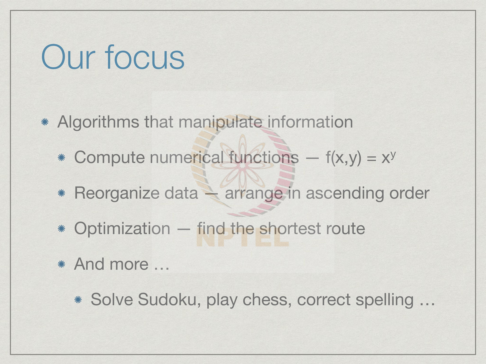
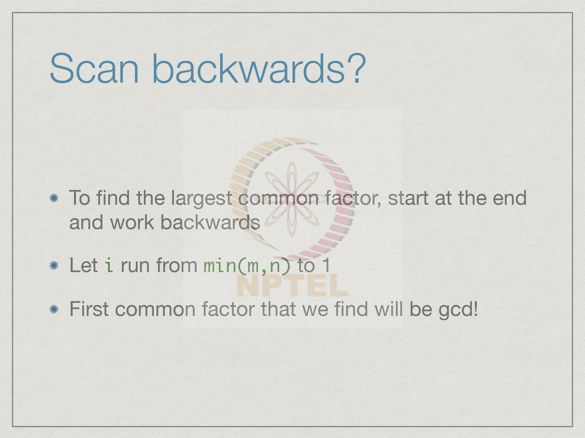

Week 1
1.1 Algorithms and programming: simple gcd
Welcome to the first lecture on the course on Programming,Data Structures and Algorithm in Python.
Let's start with the basic definition of what we mean by an algorithm and what
programming is. As most of you probably know, an algorithm is a description of how to
systematically perform some task. An algorithm consists of a sequence of steps which
can we think of as a recipe in order to achieve something. So, the word recipe of course,
comes from cooking where we have list of ingredients and then a sequence of steps to
prepare a dish. So, in the same way an algorithm is a way to prepare something or to
achieve a given task. So, in the context of our thing, a recipe will is what we call a
program. And we write down a program using a programming language. So, the goal of
programming language is to be able to describe the sequence of steps that are required and to also describe how we might pursue different sequences of steps if different things
happen in between.
The notion of a step is something that can be performed by whatever is executing the
algorithm. Now a program need not be executed by a machine although that will the
typical context of computer programming were we expect a computer to execute our
steps. A program could also be executed by a person. For instance, supposing the task at
hand is to prepare a hall for a function. So, this will consists of different steps such as a
cleaning the room, preparing the stage, making sure the decoration are up, arranging the
chairs and so on. This will be executed by a team of people. Now depending on the
expertise and the experience of this group of people, you can describe this algorithm at
different levels of detail.
For instance, an instruction such as arrange the chair would makes sense if the people involved know exactly what is expected. On the other hand, if this is a new group of people who have never done this before; you might need to describe to step in more detail. For instance, you might want to say that arrange the chairs in the 8 rows and put 10 chairs in each row. So, the notion of a step is subjective, it depends on what we expect of the person or the machine which is executing the algorithm. And in terms of that capability, we describe the algorithm itself.

Our focus in this course is going to be on computer algorithms and typically, these
algorithms manipulate information. The most basic kind of algorithm that all of us are
familiar with from high school is an algorithm that computes numerical functions. For
instance, we could have an algorithm which takes two numbers x and y, and computes x
to the power y. So, we have seen any number of such functions in school.
For example, to compute square root of x, so what we do in school is we have
complicated way to compute square root of x or we might have x divided by y where we
do long division and so on. These are all algorithms, which compute values given one or
more numbers they compute the output of this function.
But all of us who have used computers know that many other things also fall within the
realm of computation. For instance, if we use a spreadsheet to arrange information and
then we want to sort of column. So, this involves rearranging the items in the column in
some order either in ascending order or descending order. So, reorganizing information is
also a computational task and we need to know how to do this algorithmically. We also
see computation around us in the day today‘s life. For instance, when we go to a travel
booking site and we try to book a flight from one city to another city it will offer to
arrange the flights in terms of the minimum time or the minimum cost. So, these are
optimization problems. This involves also arranging information in a particular way and
then computing some quantity that we desire.
In this case, we want to know that a we can get from a to b, and b among all the ways we
can get from a to b we want the optimum one. And of course, there are many, many more
things that we see day today, which are executed by computer programs. We can play
games. For instance, we can solve Sudoku or we can play chess against a program. When
we use the word processor to type a document or even when we use our cell phones to
type sms messages, the computer suggests correction in our spelling.
We will look at some of these things in this course, but the point is to note that a program in our context is anything that looks at information and manipulates it to a given requirement. So, it is not only a question of taking a number in and putting the number out. It could involve rearranging things. It could involve computing more complicated things. It could involve organizing the information in a particular ways, so these computations become more tractable and that is what we call a data structure.
So to illustrate this let us look at the function which most of us have seen and try to
understand the algorithmically. So, the property that I want to compute is the greatest
common decide divisor of two positive integers m and n. So, as we know a divisor is a
number that divides. So k is a divisor of m; if I can divide m by k and get no reminder.
So, the greatest common divisor of m and n must be something which is a common
divisor. So, common means it must divide both and it must be the largest of these. So, if
the largest k such that k divides m and k also divides m.
For instance, if we look at the number 8 and 12, then we can see that 4 is the factor of 8, 4 is the divisor of 8, 4 is also divisor of 12, another divisor of 12 is 6, but 6 is not a divisor of 8. So, if we go through the divisors of 8 and twelve it is easy to check that the largest number that divides both 8 and 12 is 4. So, gcd of 8 and 12 is 4. What about 18 and 25. 25 is 5 by 5. So, it has only one divisor other than 1 and 25, which is 5. And 5 is not a divisor of 18, but fortunately 1 is a divisor of 18. So, we can say that gcd of 18 and 25 is 1; there is no number bigger than 1 that divides both 18 and 25. Since 1 divides every number, as we saw in the case of 18 and 25, there will always be at least one common divisor among the two numbers. The gcd will always be well defined; it will never be that we cannot find the common divisor and because all the common divisors will be numbers, we can arrange them from smallest to largest and pick the largest one as the greatest common divisor. So, given any pair of positive number m and n, we can definitely compute the gcd of these two numbers.
So, how would one go about computing gcd of m, n? So, this is where we come to the
algorithmic way, we want to describe the uniform way of systematically computing gcd
of m n for any m or any n. So, here is a very simple procedure. It is not the most
efficient; we will see better once as we go along. But if we just look at the definition of
gcd it says look at all the factors of m, look at all the factor of n and find the largest one
which is the factor of both. So, the naive way to do this would be first list out factors of
m, then list out all the factor of second number n and then among these two lists report
the largest number that appears in both lists. This is almost literally the definition of gcd.
Now question is does this constitute an algorithm. Well, at a high level of detail if we
think of list out factors as a single step, what we want from an algorithm are two things.
One is that the description of what to do must be written down in a finite way. In the
sense that I should be able to write down the instruction regardless of the value m and n
in such a way it can read it and comprehend it once and for all.
Here is very clear, we have exactly three steps right. So, we have three steps at constitute the algorithm so it certainly presented in a finite way. The other requirement of an algorithm is that we must get the answer after a finite number of steps. Of this finite number of steps may be different for different values of m and n, you can imagine that if you have a very small number for n there are not many factors they are the very large number for n you might have many factors. So, the process of listing out the factors of m and n may take a long time; however, we want to be guaranteed that this process will always end and then having done this we will always able to find the largest number that appears in both lists.
To argue that this process is well defined all we need to realize is that the factors of m
must be between 1 and m. In other words, we although there are infinitely many different
possibility as factors we don't have to look at any number bigger than m, because it
cannot go into m evenly. So, all we need to do to compute the factors of m is to test
every number is range one to m and if it divides m without a reminder, then we add it to
list of factors. So, we start with empty list of factors and we consider it on 1, 2, 3, 4 up to
m and for each such number we check, whether if we divide m by this number we get a
reminder of 0 we get a reminder of 0 we add it to the list.
Let us look at the concrete example, let us try to compute the gcd of 14 and 63. So, the first step in our algorithm says to compute the factors of 14. So, by our observation above the factors of 14 must lie between one and 14 nothing bigger than 14 can be a factor. So, we start a listing our all the possible factors between one and 14 and testing them. So, we know of course, that 1 will always divide; in this case 2 divides 14, because 14 dived by 2 is 7 with no remainder. Now 3 does not divide, 4 does not divide, 5 does not divide, 6 does not divide; but 7 does, because if we divide 14 by 7 we get a remainder of 0. Then again 8 does not divide, nine does not divide and so on. And finally, we find that the only other factor left is 14 itself. So for every number m - 1 and m will be factors and then there may be factors in between.
So, having done this we have identified that factors of 14 and these factors are precisely
the 1, 2, 7 and 14.
The next step in computing the gcd of 14 and 63 is to compute the factors of 63. So, in
the same way we write down the all the numbers from one to 63 and we check which
ones divide. So, again we will find that 1 divides, here 2 does not divide; because 63 is
not even, 3 does divides, then we find a bunch of numbers here, which do not divide.
Then we find that 7 divides, because 7 9's are 63. Then again 8 does not divides, but 9
does. Then again there are large gap of numbers, which do not divide. And then 21 does
divide, because 21 3's are 63. And then finally, we find that the last factor that we have is
63. So, if we go through this systematically from one to 63 crossing out each number
which is not a factor we end up with the list 1, 3, 7, 9, 21 and 63.
Having computed the factors of the two numbers 14 and 63 the next step in our
algorithm says that we must find the largest factor that appears in both list. So, how do
we do this, how do we construct a list of common factors. Now there are more clever
ways to do this, but here is a very simple way. We just go through one of the lists say the
list of factors of 14 and for each item in the list we check it is a factor of 63.
So, we start with 1 and we say does 1 appear as a factor of 63. It does so we add to the
list of common factors. Then we look at 2 then we ask does it appear; it does not appear
so we skip it. Then we look at 3 and look at 7 rather and we find that 7 does appear so we
add 7. Then finally, we look at 14 and find that 14 does not appears so we skip it. In this
way we have systematically gone through 1, 2, 7 and 14 and concluded that of these only
1 and 7 appear in both list.
And now having done this we have a list of all the common factors we computed them from smallest to biggest, because we went to the factors of 14 in ascending order. So, this list will also be in ascending order. So, returning the largest factors just returns the right most factor in this list namely 7. This is the output of our function. We have computed the factors of 14, computed the factors of 63, systematically checked for every factor of 14, whether it is also a factor of 63 and computed the list of common factors here and then from this list we have extracted the largest one and this in fact, is our gcd. This is an example of how this algorithm would execute.

If you have to write it down in little more detail, then we could say that we need to notice
that we need to remember these lists, right, and then come back to them. So, we need to
compute the factors of 14 keep it side we need to write it down somewhere we need to
compute the factor of 63 write it down somewhere and then compare these two lists. So,
in other words we need to assign some names to store these. Let us call fm for factors of
m and fn factors of n as the names of these lists. So, what we do is that we run through
the numbers one to m. And for each i, in this list 1 to m we check, whether i divide m,
whether m divided by i as reminder 0 and if so we add it to the list factors of m or fm.
Similarly, for each j from 1 to n we check, whether j divides n and if so we add it to the
list fn.
Now we have two lists fm and fn which are the factors of m and factors of n. Now we want to compute the list of common factors, which we will call cf. So, what we do is for every f that is a factor of a first number, remember in our case was 14 where each f so we ran through 1, 2, 7 and 14 in our case right. So, for each f is list we add f to the list of the common factors if it also appears in the other list. So, in the other list if you number is 1, 3, 7, 9, 21 and 63. So, we compare f with this list and if we find it we add it to cf. And having done this now we want to return the largest value of the list of common factors. Remember that one will always be a common factor. So, the list cf will not be empty. There will be at least one value, but since we add them in ascending order since the list fm and fn, where constructed from 1 to m and 1 to n the largest value will also be the right most value. This gives us a slightly more detailed algorithm for gcd. It is more or less same as previous one except spells out little more details how to compute the list of factors of m and how to compute the list of factors of n and how to compute the largest of common factor between these two lists. So, earlier we had three abstract statements now we are expanded out into 6, slightly more detailed statements.

This already gives us enough information to write our first python program. Of course,
we will need to learn little more, before we know how to write it, but we can certainly
figure out how to read it. So, what this python programming is doing is exactly what we
described informally in the previous step. The first thing in the python program is a line
which defines the function. So, we are defining a function gcd of m comma n. So, m and
n are the two arguments which could be any number like any function. It's like when we
read f of x y in mathematics it means x and y are arbitrator values and for every x and y
do something depending on the values that we a call the function with. So, this says that
this is a definition, so def for definition of a function gcd m, n.
Now the first step is to compute the list of factors of m. In python we write a list using
square brackets. So, list is written as x y z and so on. So, the empty list is just an open
bracket and a square close bracket. So, we start off with an empty list of factors. So, this
equality means assign a value. So, we assign fm the list of factors of m to be the empty
list. Now we need to test every value in the range 1 to n.
Now python has a built in function called range, but because of we shall see, because of
peculiarity of python this returns not the range you except, but one less. So, if I say give
the numbers in the range 1 to n plus 1, it gives me in the range one to m, one up to the
upper limit, but not including the upper limit. So, this will say that i takes the values one
two three up to m. For each of these values of i, we check whether this is true. Now
percentage is the remainder operation.
It checks whether remainder of m divided by i is 0. If the remainder of m divided by i is
0 then we will append i to the list fn, we will add it to the right append is the English
word which just means add to the end of the list. So, we append i to n. So, in this step,
we have computed fm. This is exactly what we wrote informally in the previous example
we just said that for each i from 1 to m add i to fm if i divides m and now we have done
it in python syntax. So, we have defined an empty list of factors and for each number in
that range we have checked it is a divisor and then add it.
And now here we do the exactly the same thing for n. So, we start with the empty list of
factors of n for every j in for this range if it divides we append it. Now, at this point we
have two list fm and fn. Now, we want to compute the list of common factors. So, we use
cf to denote the list of common factors. Initially there are no common factors. Now, for
every factor in the first list if the factor appears in the second list then we append it to cf.
So, the same function append is being use throughout. Just take a list and add a value.
Which value? We add the value that we are looking at now provided it satisfies the
conditions. So, earlier we were adding provided the divisor was 0 uh the remainder was
0, now we are adding it provided it appears in both list. For every f in the first list if it
appears in the second list add it.
After this we have computed fm, cf. And now we want the right most element. So, this is
just some python syntax if you see which says that instead of, if we start counting from
the left then the number the positions in the list are number 0, 1, 2, 3, and 4. But python
has a shortcut which says that you want to count from the right then we count the
numbers as minus 1, minus 2 and so on. So, it says return the minus 1'th element of cf
which in Python jargon means return the right most element. So, this is the right most
element.
At this point it is enough to understand that we can actually try and decode this code this program even though we may not understand exactly why we are using colon in some places and why we are pushing something. See notice that are other syntactic things here, so there are for example, you have these punctuation marks, which are a bit odd like these colons. Then you have the fact that this line is indented with respect to this line, this line is indented to this line. These are all features that make python programs a little easier to read and write then programs in other languages. So, we will come to these when we learn python syntax more formally. But at this point you should be able to convince yourself that this set of python steps is a very faithful rendering of the informal algorithm that we wrote in the previous slide.
Let us note some points that we can already deduce from this particular example. So, the
first important point is that we need a way to keep track of intermediate values. So, we
have two names to begin with the names of our arguments m and n. Then we use these
three names to compute this list of factors and common factors and we use other names
like i, j and f. In order to run through these. We need i to run from 1 to n. We need j to
run from 1 to n. Of course, we could reuse i. But it is okay. We use f to run through all
the factors in cf. So, these are all ways of keeping track of intermediate values. The
second point to note is that a value can be a single item.
For example, m n are numbers, similarly i, j and f at each step are numbers. So, these
will be single values or they could be collections. So, there are lists. So fm is a list, fn is
a list. So, it is a single name denoting a collection of values in this case a list a sequence
has a first position and next position and a last position. These are list of numbers.
One can imagine the other collections and we will see them as we go along. So,
collections are important, because it would be very difficult to write a program if we had
to keep producing a name for every factor of m separately. We need a name collectively
for all the factors of m regardless of how big m is. These names can denote can be denote
single values or collections of values. And a collection of values with the particular
structure is precisely what we call data structure. So, these are more generally called data
structures. So, in this case the data structure we have is a list.
What can we do with these names and values well one thing is we can assigned a value to a name. So, for instance when we write fn is equal to the empty list we are explicitly setting the value of fn to be the empty list. This tells two things this says the value is empyt list, so it is also tells python the fn denotes the lists these are the two steps going on here as we see. And the other part is that when we write something like for each f in the list cf, which is implicitly saying that take every value in cf and assign it one by one to the values f to the name f. Right though they do not have this equality sign explicitly implicitly this is assigning the new values for f as we step the list cf right. So, the main thing that we do in a python program is to assign values to names.
And having assigned a value we can then modify the value. For instance every time we
find a new factor of n we do not want to through any old factor we want to take the
existing list fm and we want to add it. So, this function append for instance modifies the
value of the name fn to a new name which takes the old name and sticks an i at the end
of it.
More generally you could have a number and we could want a replaces by two times a
number. So, we might have something like i is equal to two times i. So, star stands for
multiplication this does not mean that i is equals to two times i arithmetically because;
obviously, unless i is 0 i cannot be equal to two times itself. What is means is that take
the current value of i, multiply it by two and assign it to i. So, we will see this as we go
along, but assignment can either assign a completely new value or you could update the
value using the old value. So, here we taking the old value of the function of the list fn
and we are appending a value it would getting a new value of fn.
The other part that we are need to note is how we execute steps. So, we said at the
beginning of today's lecture a program is a sequence of steps. But we do not just execute
the sequence of steps from beginning to end blindly. Sometimes we have to do the same
thing again and again. For instance we have to check for every possible factor from 1 to
m if it divides m and then put it in the list. So, some steps are repeated we do something,
for examples here for each item in a list.
And some steps are executed only if the value that we are looking at meets particular
conditions. When we say something like if m percent i is 0, if the remainder of m divided
by a is 0 then append. So, the step append i to fm the factors of m this happens only if i
matches the condition that it is a factor of m. So, we have repeated steps where same
thing done again and again. And they have conditionals steps something which is done
only if a particular condition holds.
So, we will stop here. These examples should show you that programs are not very different from what we know intuitively, it is only a question of writing them down correctly, and making sure that we keep track of all the intermediate values and steps that we need as we long, so that we do not lose things. We will look at this example in more detail as we go long, and try to find other ways of writing it, and examine other features, but essentially this is a good way of illustrating programming.
1.2 Improving naive gcd
In the first lecture we used gcd as an example to introduce some basic concepts in programming. We will continue to look at the same example and see how to refine our program and explore new ideas.
Here was our basic algorithm for gcd, which as we said more or less follows the
definition of the function. We construct two lists of factors for the inputs m and n. So, we
construct fm the factors of m, fn the factors of n, and then from these we compute cf the
list of factors in both lists or common factors. Our goal is to return the greatest common
divisor of the largest number in this common list which happens to be the last one in this
list, since we add these factors in ascending order.
So can we do better than this? The way we have proceeded, we first scan all numbers
from 1 to m to compute the list fm of factors of m, and then we again start from 1 to n to
compute fn. So, an obvious improvement is to just directly scan the numbers from 1 to
the larger of m and n and in one scan compute list fm and fn.
In another words for each i in this list 1 to the maximum of m and n we first check if i
divides m, if so we add it to the list of factors of m, and then we check if i divides n and
if so we add it to list fn. Instead of doing two separate scans over 1 to m and then 1 to n
and repeating the past we do it in one scan.
But even this can be improved upon. If we are doing it in one pass and we are checking if numbers divide both - m and n, then why not we just directly check for common factors. In another words instead of computing two lists and then combining them we can just directly do the following: for each i from 1 to the maximum of m and n, if i divides both m and n then we directly add i to the list of common factors. If it divides neither or if it divides only one of them then it is not a common factor and we can discard. In fact, notice that rather than going to the maximum of m and n we should go to the minimum of m and n, because once we cross the smaller number we will not get a factor for the smaller number. Remember that the factors of m lie between 1 and m and for n lie between 1 and n. If m is smaller than n for example, if we input m plus 1 though it made a factor of n it certainly cannot be a factor of m. So our better strategy is for each i in the range 1 to the minimum of m, and n if i divides both m and n then we add i to the list of common factors.
Here is a much shorter Python program implementing this new strategy. So instead of computing the lists fm and fn we directly compute the list of common factors. We let i range from 1 to the minimum of m plus m and n and remember that Python requires us to give the limit of the range is one more than the limit we want to go up to, so we go from 1 to the minimum m n plus 1. And now we have an extra connective it is called a logical connective and which says that we want two conditions to be proved, we want the remainder when m is divided by i to be 0, in another words i divides m and we also want the remainder when n is divided by i to be 0, so i should divide both m and n and if so we add i to the list of common factors. And having done so once again we are doing it in ascending order, so the common factors are being added as we go along the larger ones come later. So, we finally want the last element which in Python is given as the minus 1th element of the list cf.
So having done this, maybe we can simplify things further. Do we need a list of common factors at all? Remember that we only need the largest common factor. We observed that there will always be at least one common factor namely 1. So, the notion of the largest common factor will always be well defined for any pair m and n. Each time we can start with 1 and each time we find a larger common factor we can discard the previous one, we do not need to remember all the common factors we only need the largest one. So this can be greatly simplifying our strategy because we do not need to keep the list of every possible common factor in this list; we just need to keep the largest one that we have seen. We can use a name say mrcf for the most recent common factor, and keep updating this name with the value of the common factor that we saw last.
So here is a Python implementation of this idea where we do not have a list at all. We directly scan all the possible common factors from 1 to the minimum of m and n. Whenever we find a common factor we update the value of our name mrcf to be the current common factor that we have found. Now remember that 1 will always be a common factor, so initially mrcf will be assigned the value 1, it will not be that we go through this repeated execution of this and never assign mrcf because the condition is never true. Since one is the common factor we will at least have mrcf equal to 1, but if we find a larger common factor the one will be replaced by the later common factor. At the end of this for iteration or loop what we end up with is the largest common factor that we found between 1 and the minimum of m and n which is indeed the gcd of m and n.
We can still do some further optimizations. Since, we are looking for the largest common factor, why do we start at the beginning which will give us the smallest common factor. So, we can start at the end of the list and work backwards. Instead of running from 1 to the minimum of m and n we can start from the minimum of m and n and work backwards to 1. Again the guarantee is that the 1 will always show up as a common factor, so if there are no other common factors at the very end we will find 1 as the greatest common factor. And in this process we do not have to ever go past any common factor that we find, if we are working backwards from largest to smallest the very first common factor we find must be in fact the gcd of m and n.
How would we write this in Python? Well, you can modify that for i in range, so notice that normally this function goes from a smaller value to a bigger value, you can modify this to go backwards instead. But instead of doing this which we will see how to do later on when we actually get into formal Python, let us explore a new way of going through a list of values. We start by assigning to the index i, the value that we want to start with namely the minimum of m and n, remember we want to start at the largest possible value for i and go backwards. So what we have is, a new word instead of for called while, so while as the English word suggests is something that happens while the condition is true. So, while the i that we are looking for is positive. So while i is greater than 0, what do we do? We check if i is a common factor. This is the same as before, we check whether i divides m and i also divides n. If we find the common factor we are done, we just return the value of i that we have found and we implicitly exit from this function. Every time you see a return statement in a function, the function terminates and the value in the return is what the function gives back to us. So we start with i equal to the minimum of m and n and we check whether i is a common factor if it is so we exit and return the value of i that we last found. And this is the only value that we need, we do not need any other common factors. So, we return the very first time we see a common factor.
On the other hand, if i is not a common factor we need to proceed by checking the next one which is to go backwards and this is the achieved by this update. So, remember that we said that we can assign values or update values using this equality operation. This equality operation is not mathematical equality as it looks, but rather it is the assignment of a value. It says, take the old value of i and make it the new value. So it says, update i to i minus 1, take the current value of I, subtract 1 and replace it in i. The mathematical equality is written as double equal too this is what we use in our conditions. So, it is important to remember this that double equal to means equality as in the left hand side is equal to the right hand side, whereas the single equality in Python and many other programming languages means assign a value to a variable. So, this is the final optimization that we have of this naive algorithm which is to basically scan for common factors from the beginning to the end. So now we are doing it from the end to the beginning and keeping only the first factor that we find.
What we saw in this example is a new kind of loop. So, this new kind of loop has a
special word while. And while is accompanied by condition, so long as the condition is
true, we do whatever is within the body of the while. Now notice that Python uses
indentation, so these statements here are offset with respect to the while. This is how
Python knows that steps 1 to k belong to this while. So, these are the steps that must be
repeated at the end of this thing, you come back and you check whether the condition is
still true, if it is true you do it one more time and so on. So, while is useful when we do
not know in advance how many times we will repeat the steps.
When we were scanning for the list of factors we knew that we would start with one and
go up to the minimum of m and n. We could predict in advance that we would do
precisely that many steps and so we could use this for loop, so for loop has a fixed
number of repetitions. On the other hand, a while loop is typically used when you do not
know in advance when you are going to stop. So in this case we going to start with the
minimum of m and n, work backwards and stop as soon as we find the factor, but we
have no idea in advance whether this will come early or will have to go all the way back
to 1 which we know is guaranteed to be a valid factor.
One of the problems that one could face with the while is that we keep coming back and
finding that the condition is true. So we never progressed out of the while. So, so long as
the condition is true these steps will be executed and then you go back and do it again. If
you have not changed something which makes the condition false you will never come
out.
In our previous example, in order to make the condition false we need to i to become 0.
So we start with the minimum of m and n. So, what we guarantee is that every time we
go through this while and we do not finish what we wanted to do we reduce i by 1, and
so since we start with some fixed value and we keep reducing i by 1 eventually we must
reach 0.
So in general when you use a while loop you must make sure that you are making
progress towards terminating the loop otherwise you have a dangerous kind of behavior
called an infinite loop where the computation just keeps going on and on without
returning a value and you have no idea whether it is just taking a very long time to
compute the answer or whether it is never going to finish.
So in this lecture what we have seen is that we can start with a very naive idea which more or less implements the function as it is defined and work our ways to dramatically simplify the algorithm. Now one thing from a computational point of view, is that though the newer versions are simpler to program and therefore to understand, the amount of time they take is not very different. We are still basically running through all values in principle from 1 to the minimum of m and n. If we start from the beginning then we will run through all these values anyway because we scan all these numbers in order to find the common factors. In the last version where we were trying to work backwards and stop at the first common factor it could still be that the two numbers have no common factor other than 1. So again, we have to run all the way back from minimum of m and n back to 1 before we find the answer. Although, the programs look simpler computationally, they are all roughly the same and that they take time proportional to the values m and n. What we will see in the next lecture is that we can actually come up with a dramatically different way to compute gcd, which will be much more efficient.
1.3 Euclid's Algorithm for gcd
Let us continue with our running example of gcd to explore more issues involved with program.
We started with the basic definition of gcd, which said that we should first compute all
the factors of m, store it in a list, compute all the factors of n, store it in another list, from
these two lists, extract the list of common factors and report the largest one in this
common factor list. Our first simplification was to observe that we can actually do a
single pass from 1 to the minimum of m and n and directly compute the list of common
factors without first separately computing the factors on m and the factors of n. We then
observe that we dont even need this list of common factors since our interest is only in
the greatest common factor or the greatest common divisor. So, we may as well just keep
track of the largest common factor we have seen so far in a single name and report it at
the end.
Our final simplification was to observe that if we are interested in the largest common
factor, we should start at the end and not the beginning. So, instead of starting from 1 and
working upwards to the minimum of m and n its better to start with minimum of m and n
and work backwards to one, and as soon as we find a common factor we report it and
exit.
Remember always that 1 is guaranteed to be a common factor. So when we start from
minimum of m and n and go backwards, if we dont see any other common factor, we are
still guaranteed that we will exit correctly when we hit one. So what we notice that was,
that though these different versions are simpler than the earlier versions they all have the
same efficiency in terms of computation, which is that they will force us in the worst
case to run through all the numbers between 1 and the minimum of m and n, before we
find the greatest common factor whether we work forwards or backwards.
So at the time of the ancients Greeks, what was possibly the first algorithm in modem terminology was discovered by Euclid, and that was for this problem - gcd. So what Euclid said was the following. Suppose we have a divisor d which divides both m and n, so this is a common divisor and we are looking for the largest such d. Let us assume also for the sake of argument that m is greater than n. So if d divides both m and n, we can write m as a times d and n as b times d for some values a and b, so m is multiple of d and so is n. So if we subtract the equations then the left hand side is m minus n. So, we take m and subtract n from m, so correspondingly we subtract b d from a d. So, m minus n is equal to a d minus b d, but since d is a common term this means m minus n is a minus b times d. This is where we are using the assumption that m is greater than n, so a minus b will be a positive number. But the important thing to note is that m minus n is also a multiple of d. In other words, if d divides both m and n, it also divides m minus n. And since d is the largest divisor of m and n, it will turn out that d is also the largest divisor which is common to m, n and m minus n. In other words, the gcd of m and n is the same as the gcd of the smaller of the two, namely n and the difference of the two m and n, m minus n. So, we can use this to drastically simplify the process of finding the gcd.
So here is the first version of Euclids algorithm. So, consider the value: gcd of m n assuming that m is greater than n. So if n is already a divisor of m, then we are done and we return n. Otherwise, we transform the problem into a new one and instead of computing the gcd of m and n that we started with, we compute the gcd of n and m minus n and return that value instead.
So, here is a python implementation of this idea. There are a couple of new features that
are introduced here, so let us look at them. The first is this special statement which starts
with symbol hash. So in python, this kind of a statement is called a comment.
So a comment is a statement that you put into a program to explain what is going on to a
person reading the program, but it is ignored by the computer executing the program. So,
this statement says that we are assuming that m is bigger than or equal to n. So, this tells
us that when the program continues this is the assumption. Of course, it is possible that
the person who invokes gcd does not realize this, so they might invoke it with m smaller
than n and so we fix it.
This is a special kind of assignment which is peculiar to python; it is not present in most
other programming languages. So what we want to do is, basically we want to take the
values m and n and we want to exchange them, right. We want to make the new value of
m, the old value of n and the new value of n, the old value of m, so that in case m and n
were in the wrong order we reverse them. So, what this python statement does is it takes
a pair of values and it does a simultaneous assignment so it says that the value of n goes
into the value of m and the value of m goes into the value of n.
Now it is important that it is simultaneous, because if you do it in either order, if you first
copy the value of n into m, then the old value of n is lost. So, you cannot copy the old
value of m into the new value of n because you have lost it. So imagine that you have
two mugs of water, and now you want to exchange their contents. Now you have to make
space, you cannot pour this into that without getting rid of that and once you got rid of
that you cannot pour that into that, so you need third mug normally.
You need to first transfer this here and keep it safe, and then you need to transfer this
there and then you need to copy it back. So this is the normal way that most
programming languages would ask you to exchange two values, but python has this nifty
feature by which you can take a pair of values and simultaneously update them and in
particularly this simultaneous update allows us to exchange the values without worrying
about having this extra temporary place to park one value.
Anyway, all that this first part is doing is to ensure that this condition that we have
assumed is satisfied. So now we come to the crux of the algorithm. If m divides n that is
remainder of m divided by n is 0 then we have found n to be the gcd and we return n. If
this is not the case, then we go back to what we discovered in the last slide and we now
are going to compute gcd of n and the difference m minus n. We would ideally like to
compute gcd of n and m minus n. So, we compute the difference m minus n and we
could just invoke this.
But, it is possible, for example - if m is say 97 and n is 2 then the difference will be 95.
The difference could very well be larger than n, and we would ideally like to call this
function with the first number bigger than the larger number. So we will just ensure this
even though our function does take care of this. What we want to do is, we want to call
gcd with n and m minus n instead we will call gcd with the maximum value of n and the
difference as a first argument and the minimum value of n and the difference. So it will
make sure that the bigger of the two values goes first and the smaller of the two values
go. And whatever this gcd, the new gcd returns is what this function will return.
This is an example of what we will see later, which is quite natural, which is called
Recursion. Recursion means, that we are going to solve this problem by solving the
smaller problem and using that answer in this case directly to report the answer for our
current problem. So we want to solve the gcd of m and n, but the gcd of m and n instead
we solve the gcd n and m minus n and whatever answer that gives us we directly report it
back as the gcd for this, so we just invoke the function with the smaller values and then
we return it.
Now whenever you do a recursive call like this, it is like a while loop; it will invoke the
function again, that in turn will invoke a smaller function and so on. And you have to
make sure that this sequence in which gcd keeps calling gcd with different values does
not get to an infinite progression without a stopping point. So, formally what we have to
ensure is that this guarantee of finding an n which divides m, so this is where gcd
actually exits without calling itself. We have to make sure that eventually we will reach
this point. Now what is happening if you see here is that the values that are passed to gcd
are getting smaller and smaller.
Now what can we have for m minus n? What can be the value? Can it be 0? Well, if m
minus n is 0 that means m is equal to n, if m is equal to n then certainly m is divisible by
n. If m minus n is 0 then it could have exited, so it cannot be 0. It must be at least 1, so
whenever we call this function m minus n its at least one. On the other hand each time
we are reaching smaller values. So, we start with some value and m minus n keeps
decreasing.
What happens when it actually reaches 1? Well, when it reaches 1 then 1 divides every
other number, so m percent n or m divided by n, the remainder will be 0, so we will
return gcd of 0. In other words, we had guaranteed that this function because it keeps
reducing the number that we invoke the function with will eventually produce a call
where gcd terminates. This is important and we will come back to this later but whenever
you write a function like this, you have to make sure that there is a base case which will
be reached in a finite number of steps no matter where you start.
This is Euclids algorithm, the first version where we observe that the gcd of m and n can
be replaced by the gcd n and m minus n. And what we have seen in this particular
implementation are three things rather, we have seen how to put a comment in our code,
we have seen that python allows this kind of simultaneous updation of two variables at
the same time so m comma n equal to n comma m. We have also seen that we can use the
same function with new arguments in order to compute the current functions. So there is
no problem with saying that in order to compute gcd of m and n, I well instead compute
gcd's on some other value and use that answer to return my answer.
Let us look at a different version of this algorithm, where we replace the recursive call by
a while loop. We saw while in our last version of this standard algorithm when we were
counting down from minimum of m comma n to 1, so we kept checking whether i was
greater than 0 and we kept decrementing. Well, here we are doing the recursion using a
while, so the first thing to notice here is that I have moved this comment which used to
be in a separate line to the end of the line.
What python says is that, if there is hash then the rest of the line can be ignored. So, it
reads this line it sees a valid condition and then sees the hash, so its as though this
statement was not part of the python program when it is executed. Comment can either
be in a separate line or it can be in end of a line. Of course, remember that you cannot
put anything after this which you want python to execute because once it sees a hash the
rest of the line is going to be ignored, so it cannot be in middle of a line you cannot put a
comment in middle of a line, but you can put it on separate line or you can put it at end
of the line.
So anyway so this is our comment as before. So up to here there is no change except that
I have shifted the comment position. Now we reach this point where we actually have to
do some computation. At this point if we have found n such that n divides m we are done
and we can directly return n. So, this is what our recursive code would do. If we have not
found such an n we have to do some work. The condition is to check whether m divided
by n actually produces a remainder. So, this not equal to symbol is return with this
exclamation mark, so this is the same as the mathematical not equal to.
Remember that this double equal to was what we use for the mathematical symbol of
equality. This is our symbol for not equal to. So, so long as there is remainder, that is the
remainder m divided by n is not 0 we do what we did before we compute the difference
and we replace m by the maximum of the two values and n by the smaller of the two
values. We have a pair m n whose gcd we are trying to find right, with assumption that m
is bigger than n at each step we replace m by the larger of n and the difference and n by
the smaller of n and the difference.
This exactly what we are doing in the recursive call, we are saying pretend we are
computing gcd of that. Here in this while loop effectively we are saying replace the gcd
of m n by the computation of maximum n diff and minimum n diff. We keep doing this
until we hit a condition where n actually divides m, and exactly like we said in the
recursive case that there will be a boundary case where at worst case n will become 1 and
1 will divide everything.
In the same way here the difference will keep reducing, the difference cannot be 0,
because if difference is 0 it could have divided, so difference can at most go down to 1
and when it hits one we are done. This a while version of the same recursive function we
wrote earlier, so if it helps you can look at these side by side and try to understand what
this recursive things is doing and what the while is doing and see that they are basically
doing the same thing.
And the idea that the recursion must terminate is exactly analogous to the claim that we
said earlier that when you write a while you must make sure that you make progress
towards making the while condition false, so that the while exits. So, just like the
recursion can go on forever, if you are not careful and you do not invoke it with
arguments which guarantee termination, the while can also go on forever if you do not
make progress within the while in order to make sure that the while condition eventually
becomes false.
We can actually do a little better than this. Let us see one problem with this by doing a
hand execution. So supposing we start with some number like gcd of 101 and 2, then our
algorithm will say that this should now become gcd of the difference and n, the
difference is 99 so will have 99 and 2, and then this will become gcd of 97 and 2 and so
on. So, we will keep doing this about 50 steps then eventually we will come down to gcd
of 5 and 2, and then gcd of 3 and 2. Now when we compute the difference we get gcd of
2 and 1, so now the difference will become smaller. Then at this point we will report that
the answer is 1. So, it actually takes us about 50 steps in order to do gcd of 101 into 2.
One of our criticisms of naive approach is that it takes time proportional to the numbers
themselves. If you had numbers m and n we would take in general number of steps equal
to minimum of m and n. Now here, in fact we are taking steps larger than the minimum
because the minimum is 2, if you were just computing factors we will see that the only
factor of 2 is 2 and it is not a factor 101 we would have stopped right at beginning. This
actually seems to be worst then our earlier algorithm in certain cases.
Here is a better observation suppose n does not divide m. In other words if I divide m by
n i will get a quotient and a remainder. So, I can write n as q times n plus r where q is
quotient and r is the remainder, so you may remember these terms from high school
arithmetic. N goes into n q times and leaves a remainder r and we are guaranteed that r is
smaller than n, otherwise r it could go one more time it will become q plus 1. We have
the remainder r which is smaller than n. So for example if i say 7 and i want to divide it
by 3 for example, this will be 2 times 3 plus 1, so this will be my quotient and this will
be my remainder. And the important thing is remainder is always smaller than what I am
dividing by.
Now, let us assume as before that we have a common divisor for both m and n. In other
words like before we can write m itself as a times d and n as b times d for some numbers
a and b, because m is is multiple of d and so is n. If you plug this into the equation above
here, then we see that m which is a times d is equal to q times n which is b times d plus r.
So, d divides the left and d divides one part of the right. You can easily convince yourself
that d must also divide r.
The way to think about it if you want to pictorially is that I have this number m and I can
break it up into units of n and then there is a small bit here. On the other hand if I look at
d, d evenly divides everything. So it divides each of these blocks it also divides the
whole thing. If I continue with d, it is going to stop exactly at this boundary because d
also divides n, therefore d must also divide this last bit which is r exactly. In other words,
we can argue very easily that r must also be a multiple of d. So d must divide r as well.
If d divides m and b divides n then d must divide the remainder of m divided by n. And
as we saw before with the difference, the last time we said we would look at the
difference m divided by n. Now we are saying we look at the remainder of m divided by
n and d must divide that and d will be in fact the gcd of n and this remainder.
This is an improved and this is the actual version of the algorithm that Euclid proposed, not the difference one but the remainder one. It says consider the gcd of m and n assuming that m is bigger them n. Now if n divides m we are done we just return n, this is the same as before. Otherwise, let r be the remainder with the value of m divided by n get the remainder and return the gcd of n and r, and at this point one important thing to remember is that r is definitely less than n. So we do not have to worry about this condition here, we do not have to take the max and the min as we did for the difference because the remainder is guaranteed to be less than n otherwise n would go one more time.
As before we have very simple recursive implementation of this, and this is even simpler because we do not have to do this max min business. So, like the previous time we first flip m and n in case they are not in the right order. Then if n divides m if the remainder of m divided by n is 0 we return n and we are done, otherwise we return the gcd of n and the remainder, so this is the remainder. And remember that the remainder is always less than n so we do not have to worry about flipping it and taking max and min at this point. And analogous tp the previous case we can do this whole thing using a while instead of doing it with recursive thing. We first exchange m and n if they are in the wrong order, then so long as the remainder is not 0 we replace m by the smaller of the two numbers and we replace n by the remainder and we proceed. Now we are guaranteed that this remainder will either go to 0, but if it goes to 0 it means it divides or if its not 0 in the worst case the remainder keeps decreasing because it is always smaller than the number that we started with. So it keeps decreasing and it reaches 1 then in the next step it will divide. So finally, we will return at least one.
If we go back to the example that we were looking at, so if we saw that gcd 101, 2, and we did it using the difference we said we took about 50 steps. Now here if we do the remainder I am going to directly find that r is equal to 1 right if I divide 101 by 2 it goes 50 times remainder 1. In one step I will go to gcd 2 comma 1 and I will get 1. In fact, what you can show is that this version with the remainder actually takes time proportional to number of digits, so if I have say hundred digit number it will take about a hundred steps. So for instance if we have a billion as our number, so billion will have about 10 to the 9 will have about ten digits. Then if I do the naive algorithm then it could take some constant times of billion numbers of steps say a billion steps. But this algorithm because of the claim it takes time proportional to number of digits since 10 to the 9 has approximately 10 digits it will only take about 10 steps, so there is a dramatic improvement in efficiency in this version. This is something that we will touch up on while we are doing this course. This course is about programming, data structures and algorithms. So the programming part talks about what is the best way to express a given idea in a program in a way that it is easy to make sure that it is correct and easy to read and maintain, so that is the programming part. How do you write, how do you express your ideas in the most clear fashion. But the idea itself has to be clear and that is where data structures and algorithm start. So you might write beautiful prose, but you may have no ideas or you may have very brilliant ideas but you may express yourselves clumsily, neither of them is optimal. This is like writing in any other language. You may have brilliant ideas to express, but if you cannot convey them to the person you are talking to the ideas lose their impact. So, you need ideas and you need a language to express them. Programming is about expressing these ideas, but the ideas themselves come from algorithms and data structures.
1.4 Downloading and installing Python
For our final lecture of this first week, we will see how to actually use Python on our system.
Python is a programming language, which is available on all platforms. So, whether you are working on Linux or on a Mac or on Windows, you will be able to find a version of python that works on your system. One of the small complications with python is that there are two flavors or two versions of python, which are commonly found. So, there is an older version called python 2.7, and there is a newer version called python 3. Python 3 is a one that is being actively developed, python 2.7 is more or less a static version and currently python 3 has the version 3.5.2 or something like that. So, there is not much difference whether you are using 3.5 or 3.4, but there are difference between 2.7 and 3. And for the purpose of this course, we will work with python 3.
What is the difference between these two versions? Well, python began with a few
features and it kept developing into more versatile programming language. So, python
went through much iteration and python 2.7 was a version that was reached when the
developers of python decided that there should kind of make a clean start. And some of
the new features which had been added in and ad hoc way on to the language should be
integrated in a better way which makes it a more robust programming language.
Python 3 essentially is a modern version of python, which incorporates features that
where added on to python as it group in a way that makes it more consistent and more
easy to use, but as often happens a lot of people had already been using python, and
python 2.7 has a lot of software written using that version. In particular a lot of software
that people find convenient to use such as scientific and statistical libraries of functions
where they do not have to use it themselves, they'll just invoke these libraries are still
written using python 2.7. And if you run it from python 3 sometimes these functions do
not work as they are expected.
So, this has forced python 2.7 to live on. Eventually we hope that somebody will take the
effort to move python 2.7 libraries to python 3. And of course, newer code is largely
being developed on python 3, but you should remember that when somebody says that
they are using python they could be talking about 2.7 and not 3, and you have to make
adjustments.
For the purpose of the introductory material that we will be doing in the course, there is
almost no change between python 3 and python 2.7; however, there are some features
that we will see which are slightly different in 2.7 and we will explore them in 3, and I
will try to highlight these differences as we go long. But going forward in python 3 is the
current version and it has been the current version for some years now at least for 4 or 5
years. It is definitely the language, which is going to dominate in the future, so it is better
that you start with a new version then go back to the old version.
As far as this course is concerned, any version of python 3 should be fine. The latest version as I said is some 3.5.x, where I thing x is 2, but if you do not have 3.5, but you have 3.4 or 3.3 do not bother everything should work fine. But if you are interested, you can install the latest, latest version. If you are using Linux, it should normally be there by default because many Linux utilities require python and so python should be on you are system, but it could be that the utility is use python 2.7. So, make sure that you install python 3. You can use the package manager to do this. Now if you are using a MAC or you are using Windows then python may or may not be installed especially python 3 may not be installed on your system. There is the URL given here. If you search on Google, you will find it. Just search for python 3.5 install or download and you will get to this URL. So, www.python.org downloads release python 350. 350, is really refer into 3.5.0. So, actually the current version as I said is not 3.5.0, but 3.5.2. So, you will find instructions there - please download the version that is appropriate for your system and install it. These are designed to be fairly self-explanatory install files; if you have a problem please search online for help with the problem you are facing or ask someone around you. It is not the purpose of this course to spend a lot of time telling you how to install software. So, I hope you are able to do this, so that we can get ahead with the actual programming part.
One more thing to keep in mind, if you are familiar with other programming languages, is the distinction between interpreters and compilers. So, the main difficultly is that programming languages like python or C or C++ or Java are written for us to understand and write instructions on. So, these are somewhat high level instructions. In the other hand, computers need low level instructions. So, when we talk about names and values like i, j or we talk about list, the underline computer may not be able to directly analyze these things, so we need a translation. If you remember the very first lecture, we talked about arranging chairs. So, we said arrange the chairs as a high level thing, and we said put 80 chars in 10 in 8 rows, 10 each right. We said that they could be a difference in the level of detail in which you give instructions and this is precisely what happens. In order to execute something so called executable file that we come across we something which is return at a level that the machine can understand. Whereas, the programs that we are going to explore on this course and which all programmers normally work with are at a higher level, which cannot be directly understood by computer, so we have to bridge this gaps somehow. A compiler is a program which takes a high level programming language and translates programs on that language to a machine level programming language. So, it takes the high level program in python, if in not python, in C or C++ or Java or something and produces something with directly a machine can execute. In the other hand, the other way of dealing with the high-level language is to interpret it. So, an interpreter in normally English is somebody who stands between people talking different languages and translates back and forth. An interpreter is a program which you interact with, and you feed the interpreter instructions in your language, in this case python; and the interpreter internally figures out how to run them on the underline machine. So, whether you are running it on Windows, or Mac, or Linux interpreter guarantees that the answer that you see at the high level looks approximately the same independent of the actual platform on which you are running it. So, python is by and large an interpreted language and we should be aware of this fact.
We use python typically in the following way; we first run the interpreters. So, remember
interpreter is the program. We first invoke the interpreter; and when the interpreter is
running, we pass python commands to the interpreter to be executed. The nice thing
about dealing with an interpreter is that you can play with it like you play with a
calculator; you can feed it commands and see what it does, so it is very interactive. Of
course, it is tedious, if you have to type in large programs, so there is a way to load a
program which has been written already using a standard text editor and loading it from a
file. So, what I have shown below in green is so this is what we will see in a minute is
the prompt that the interpreter shows you.
When you enter the interpreter, it will ask you to execute a command and this is a
command that you provide the interpreter. It says. So, I have stored. I have a file called
say file name dot p y typically to indicate it is a python program from that file import all
the definitions and functions and code that is written there. So, this will tell the
interpreter to take everything that is written in that code and put it into its current
environment, so that those functions can be used. So, these things will become a little
clear and then in the demo that I am just going to show you and then you can play around
with this. And then the next week, we will get into the real details about exactly what
goes into a python program.
Check the video lecture part for more clarity
Here is a window showing the terminal which on Windows would be like a command
prompt and using unique like shell. So, if I say ls, it shows me the list of files in my
current area. And all this files with extension dot p y are actually python programs. In
this, I invoke the python interpreter by saying python 3.5 because that is the version
which I am using. If I invoke it, it will produce some messages telling me what type of
function system I'm on. So, it tells me that I am using for instance 3.5.2 and it has may
that it is a fairly recent version, it tells me that it is on a Apple and blah blah blah, but
what is important is then produces a prompt place where I can enter commands and this
is signified by these three greater times.
Now, at the python interpreter prompt, you can directly start writing things. So, for
example, you can say i is equal to 5. What it says as a take a name i assign to value of 5.
Now if I type i, it tells me that the value is 5; if I type an expression like i plus 1, it tells
me that is 6. So, you can use it as a calculator. So, you can do simple arithmetic if you
want. So, you can keep interacting with it. Now, you can also define functions remember
how we defined a function, we use def, use a function name and so on. So, we can say
for example, def twice x. This is the function twice, this takes the single argument x. And
as you might expect I would like to return two times x.
Now a python uses as we mentioned in one of the earlier lectures, indentation in order to
specify that something is a part of something else. So, the definition consists of a bunch
of it steps. So, I must tell it that these bunches of steps belong to this definition by
indenting it; it does not matter how you indent it as long as you use the same indentation
uniformly. If you are using two spaces, use two spaces use a tab, but do not mix up the
number of spaces and do not mix up tabs and spaces, because this gets you confuse the
error messages form python. So, let us use two spaces.
Let us to the sake of illustration create a new name y, and say y is two times x. Now it is
still continuing to ask me for the definitions, so the prompt has change to dot dot dot.
Now I must induct it a same way and say return y. So, what I have done is I say this
function takes in value x, computes two times x, and stores it in the name y, and returns
the value of the name y, right. Now, when I am done with this, I give a blank line and this
function is now defined. Now, twice 7 makes sense, what twice 932 will also make sense
right. So, python is very convenient in that you can have few define functions as you go
along on the fly.
Now, we could also define our gcd right here, but as you might expect sometimes a
function is too complicated to typing without make in a mistake, and secondly, you
might want to play around with the function and change it and not have to keep typing it
again and again. For this, what we need to do is first type the function in to a file and
then load the file here. Let us get out of this. So, one way to get out of this is to type quit
the brackets.
And then you get back to this prompt which is dollar which is the outside terminal or the
command prompt. So, I have actually already created something. Let us start with, so I
use an editor called emacs, you can use any takes editor if you are using Windows, you
can use notepad, if you are using and Linux, you can use emacs or vi or you can use
some simpler editor like gedit or k, anything that is comfortable, but it should just be a
text editor it should not do any formatting, do not use word processes like you know
office or something like that. You something we just manipulates text files.
If I look at gcd 1 dot py, so one nice thing what emac is it shows me colors to indicate
certain things. So, def this is the very first gcd program we wrote, which takes computes
the list f m then the list f m then the list cf, and then it returns the last elements in cf. So,
this is the first version of gcd. So, this is the exactly the code we wrote before. The point
to remember is that I have made sure that all these indentations are at the same number
of spaces in. So, this is something to remember. Now, you typing something like this
right then you save it and exit.
Now you go back to your python, and you save from that file gcd 1 import star what this
means is take the file gcd1 dot py and load all the functions which had defined there and
make them available to me here. Now, if I say gcd of 7 comma let us for example, 14 and
63 for instance, it tells me the gcd 7. Now if you take some large number like 9999 and
10000 then it takes, so may be one more digit let us see, you will notice that it is not
giving me an answer and then it gives me answer. So, it this is just to illustrate that this
was the slow gcd right. So, see how much time it took.
It has the visible gap of a few seconds before it produces the answer. And this is the
illustration that this is not a very efficiency gcd. So, one of the problems with this python
interpreter which I will see if we can solve is that if I have already loaded one file then it
is safer to exit and then reload other file rather than to update the file.
Let me reload for instance the last version of Euclid's thing, which we wrote which is the
reminder version.
It says that if m less then n exchange the values if then the second line here says that if
the reminder of m divided by n is 0 that is n is a divisor of m then return n otherwise
replace the g c d call by the call to n and its reminder. So, this we also had a version of
this where we return to the while loop. Let us use the while version. The while version
says that so long as the reminder is not 0, we keep updating m and n to n and the
reminder, and finally you return the value of n.
I am going to take this particular thing and load it into python. So, again I first invoke the
interpreter python then I say from gcdeuclid2a import star. Now I am going to give that
same large value that we saw before and which I think was say 9999999 and 1000000.
And now you see, you get an instant answer. In fact, you will see that if I even if I give it
several more digits, it should hope fully work fast. So, there is a dramatic improvement
in speed which is even visible in this simple example, if we replace the naive idea by a
clever idea.
The power of algorithm is to actually make a program which would otherwise be
hopelessly slow work at a speed which is acceptable to you. Do a load python on your
system, invoke the python interpreter and play around with the code that we have seen in
this particular week's thing, make errors see what python tells you when you import a file
which has errors. For instance now if I try to ah invoke a function which does not exists
like, if I use a function which I have not defined and which python does not understand
then it will give me a mistake like this. It will say loop is not defined. If I write
something strange like 7 less than greater than 5, then it will say that this is invalid
syntax.
The interpreter will look for an expression if the expressions do not make sense then it is
going to complain. And sometimes the error messages are easy to understand, sometime
they are less easy to understand; as we go along we will look into this. But, the purpose
of the interpreter is to either execute what you have given it or tell you that what you
have written is somehow not executable and explains why. So, do play around with it and
a get some familiarity because this is what going to be our bread and butter as we go
along.
We are going to be looking at some specific features of python in this course, but you
may find as we go along that there is something that you do not understand or something
new that you would like to try out your own. So, it is always a good idea to have access
to other resources. The python online documentation is actually an excellent place to
look for details about python and in particular, there is a very readable tutorial;
especially, if you already have some familiarity with programming the python is
probably the best place to start learning python for yourself. So, here is a URL,
docs.python.org/3 this is for python 3 tutorial index dot html. If you just go to
docs.python.org/3, you will find there are also more detailed reference manuals and so
on, which you might need at a later stage.
Do keep this as one of the places that you look when you have difficulties. And there are
two books which probably useful to understand python beyond what is covered in the
lectures if you feel that something is not clear. So, there is this book called dive into
python which is adapted for python 3. And there is book called think python which is
about generally about computational thinking in the context of python. Both of these
have the nice advantage that they are available online, so you do not have a buy
anything; you can just browse them through your browser on the net.
Before we leave you for this week, remember that learning programming is an activity;
you cannot learn programming theoretically. You have to write and execute code to
appreciate the subject. You have to make mistakes; learn from your mistakes; figure out
what works, what does not work and only then will you get a true appreciation for
programming. Reason we are going with python is because python has a very simple
syntax compared to other programming languages. We have already without formally
learning python, seen some fairly sophisticated programs for gcd and hopefully you have
understood them even if you cannot generate them. It is not very difficult to explain what
a python program is doing with a little bit of understanding.
Do take the time to practice the examples that we had seen this time. We will be giving
programming exercises as we go along; and unless you do these exercises and become
somewhat handy at manipulating python yourself, you will never truly learn both
programming and python. The other thing to remember is that once you have learned one
language, even though the features and the syntax vary from language to language, it is
very easy to pick up a another language, because all of programming has at it is base
very similar principles.
Although the syntax may vary, the ideas do not. The ideas are eventually what write the
program, but to be a fluent speaker of a programming language, you must practice it. So,
do try.